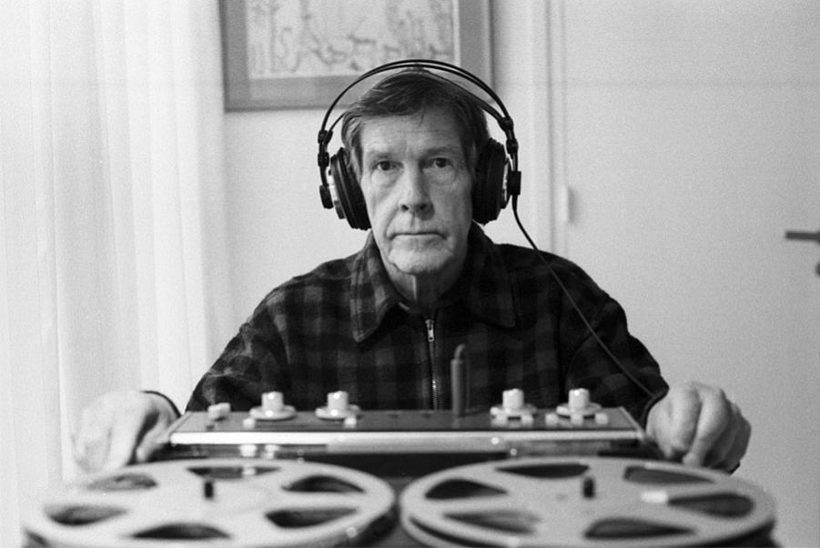

I BELIEVE THAT THE USE OF NOISE
TO MAKE MUSIC
WILL CONTINUE AND INCREASE UNTIL WE REACH A MUSIC PRODUCED THROUGH THE AID OF ELECTRICAL INSTRUMENTS
WHICH WILL MAKE AVAILABLE FOR MUSICAL PURPOSES ANY AND ALL SOUNDS THAT CAN BE HEARD. PHOTOELECTRIC, FILM, AND MECHANICAL MEDIUMS FOR THE SYNTHETIC PRODUCTION OF MUSIC
WILL BE EXPLORED. WHEREAS, IN THE PAST, THE POINT OF DISAGREEMENT HAS BEEN BETWEEN DISSONANCE AND CONSONANCE, IT WILL BE, IN THE IMMEDIATE FUTURE, BETWEEN NOISE AND SO-CALLED MUSICAL SOUNDS.
THE PRESENT METHODS OF WRITING MUSIC, PRINCIPALLY THOSE WHICH EMPLOY HARMONY AND ITS REFERENCE TO PARTICULAR STEPS IN THE FIELD OF SOUND, WILL BE INADEQUATE FOR THE COMPOSER WHO WILL BE FACED WITH THE ENTIRE FIELD OF SOUND.
NEW METHODS WILL BE DISCOVERED, BEARING A DEFINITE RELATION TO SCHOENBERG'S TWELVE-TONE SYSTEM
AND PRESENT METHODS OF WRITING PERCUSSION MUSIC
AND ANY OTHER METHODS WHICH ARE FREE FROM THE CONCEPT OF A FUNDAMENTAL TONE.
THE PRINCIPLE OF FORM WILL BE OUR ONLY CONSTANT CONNECTION WITH THE PAST. ALTHOUGH THE GREAT FORM OF THE FUTURE WILL NOT BE AS IT WAS IN THE PAST, AT ONE TIME THE FUGUE AND AT ANOTHER THE SONATA, IT WILL BE RELATED TO THESE AS THEY ARE TO EACH OTHER
THROUGH THE PRINCIPLE OF ORGANIZATION OR MAN'S COMMON ABILITY TO THINK.
Wherever we are, what we hear is mostly noise. When we ignore it, it disturbs us. When we listen to it, we find it fascinating.
The sound of a truck at 50 m.p.h. Static between the stations. Rain.
We want to capture and control these sounds, to use them, not as sound effects, but as musical instruments.
Every film studio has a library of "sound effects" recorded on film. With a film phonograph it is now possible to control the amplitude and frequency of any one of these sounds and to give to it rhythms within or beyond the reach of anyone's imagination.
Given four film phonographs, we can compose and perform a quartet for explosive motor, wind, heart beat, and landslide.
If this word, music, is sacred and reserved for eighteenth- and nineteenth-century instruments, we can substitute a more meaningful term: organization of sound.
Most inventors of electrical musical instruments have attempted to imitate eighteenth- and nineteenth-century instruments, just as early automobile designers copied the carriage.
When Theremin provided an instrument with genuinely new possibilities, Thereministes did their utmost to make the instrument sound like some old instrument, giving it a sickeningly sweet vibrato.
The special property of electrical instruments will be to provide complete control of the overtone structure of tones (as opposed to noises) and to make these tones available in any frequency, amplitude, and duration.
It is now possible for composers to make music directly, without the assistance of intermediary performers.
Any design repeated often enough on a sound track is audible. 280 circles per second on a sound track will produce one sound.
The composer (organizer of sound) will not only be faced with the entire field of sound but also with the entire field of time. No rhythm will be beyond the composer's reach.
Schoenberg's method is analogous to modern society, in which the emphasis is on the group and the integration of the individual in the group.
Percussion music is a contemporary transition from keyboard-influenced music to the all-sound music of the future.
Methods of writing percussion music have as their goal the rhythmic structure of a composition.
Before this happens, centers of experimental music must be established. In these centers, the new: